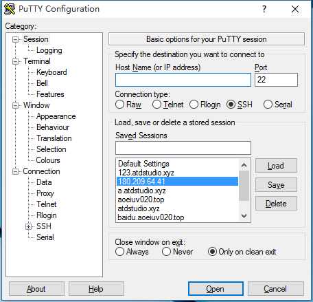
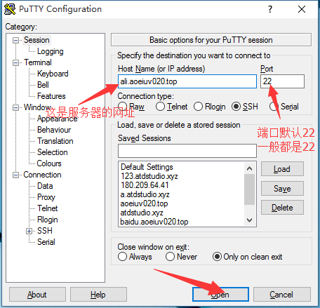
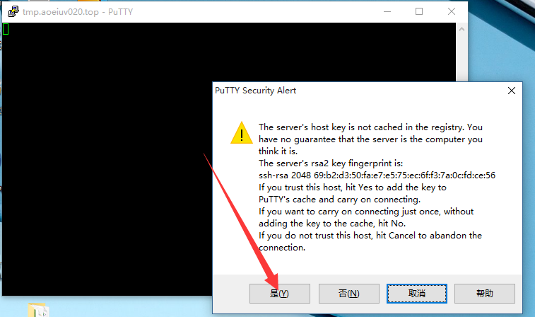
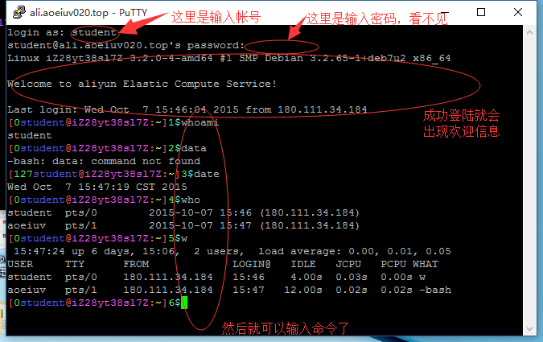
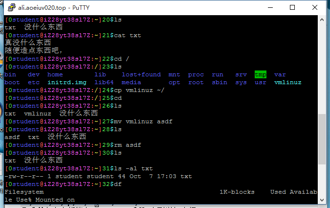
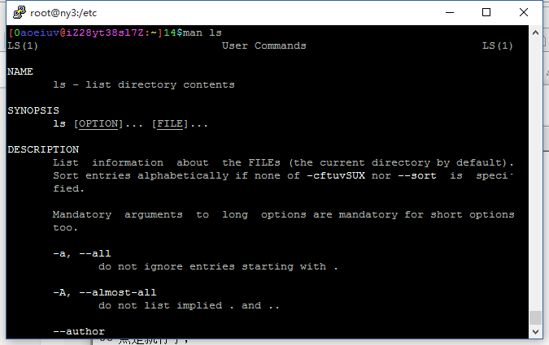

SSH，Windows下利用软件Putty，通过SSH远程控制Linux。

一看就知道，这东西很强大很复杂，事实上SSH也确实不只是简单的远程登陆，但这里只演示最基本的功能，ssh远程登陆。

远程控制首先要有个服务器去控制，这里贡献上我买的阿里云vps，地址是 ali.sastlinux.cn，帐号密码都是student，还有百度云的vps，虽然10月底就过期了，地址是 baidu.sastlinux.cn，帐号密码都是student，还有几个奇怪的外国vps，虽然未必能用的，地址分别是123.sastlinux.cn，123a.sastlinux.cn，123b.sastlinux.cn，所有帐号密码都是av，我也没怎么用，所以同学可以随便搞，搞坏了我重装就是，输入地址点了open然后就是账号密码了，但是第一次可能会有个对话框，点是就行了，这是记录地址对应的主机的，SSH为了安全需要记录了这个，如果地址对应的主机变了，就不让连了。


成功登陆的同学就有了个Linux用了，这样后面的学习可以边学边尝试，才有意义，至于具体的命令，后面也有讲，但不是现在，现在可以随便看几个命令，随便输入看看，ls,echo,cd,cp,mv,rm,cat,clear。

几乎所有命令都能在man(menual手册)查到详细介绍。

建议可以自己买个vps，linux环境的，比如阿里云的有学生优惠，9.9元/月，只要等学校要求在学信网注册后，就可以买了，其他都好贵。